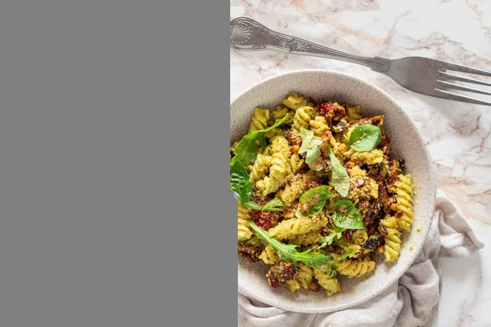

Pesto Pasta
This Vegan Pesto Pasta is a symphony of flavors - fresh basil, peppery arugula, tangy sun-dried tomatoes, and sweet, buttery pine nuts. As a bonus, you can make this impressive meal in just 30 minutes from start to finish!

Ingredients
- ½ cup fresh basil, packed
- ½ cup fresh arugula, packed
- ½ cup macadamia nuts
- 3 tablespoons nutritional yeast
- juice of 1 lemon
- 3 garlic cloves
- salt, to taste
- ¼ cup olive oil
Instructions
- Combine basil, arugula, macadamia nuts, nutritional yeast, lemon juice, and garlic cloves in a food processor and pulse for a minute, scraping down the sides as needed.
- With the motor running, slowly add in the olive oil. Blend well. Salt to taste.